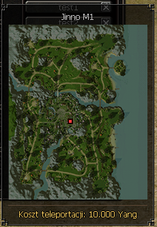
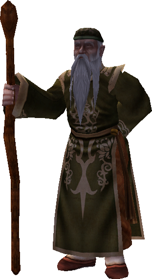
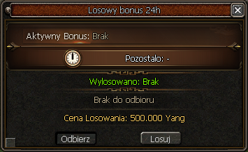

Patch notes
Opis aktualizacji v10
Założenia aktualizacji
Aktualizacja v10 jest z założenia ukierunkowana na upłynnienie rozgrywki, która obecnie stawiała zbyt duże ściany pomiędzy poszczególnymi etapami. Chcemy, aby progres był bardziej naturalny, a kluczowe elementy rozgrywki stawały się bardziej ogólnodostępne.
Zmiany mają również na celu ograniczenie nadmiernego RNG poprzez zwiększenie dostępności najważniejszych przedmiotów oraz ulepszaczy. Dzięki temu przejścia pomiędzy etapami powinny być bardziej odczuwalne, ale jednocześnie mniej frustrujące dla graczy.
Wszystkie te zmiany są także przygotowaniem pod kolejne aktualizacje, których celem będzie umożliwienie oraz wzmożenie rywalizacji. Monastyr2 od samego początku miał być serwerem nastawionym na rywalizację i walkę ekip. Do tej pory możliwości w tym zakresie były ograniczone, dlatego stopniowo rozwijamy dla Was wachlarz aktywności oraz rozwiązań, które będą wspierały ten aspekt rozgrywki. To właśnie w oparciu o rywalizację będziemy kontynuować dalszy rozwój serwera.
Dungeony, bossy i ekonomia
Przebudowano drop z dungeonów.
Farmienie contentu PvE będzie skupiało się na pozyskiwaniu przepustek z Kamieni Metin, a następnie na zarabianiu stricte z dungeonów. Bossy oraz minibossy pozostają dodatkowym elementem rozgrywki ze stałymi respawnami, przy których będziecie mogli rywalizować ze sobą w mniejszych starciach.
Ich drop nie jest przesadzony, ale pozostaje na tyle satysfakcjonujący, aby podejmowanie walki o danego bossa miało realny sens. Z bossów będziecie mogli pozyskać głównie przedmioty, których nie zdobędziecie z innych aktywności, takie jak Kamienie Duchowe, Marmury Błogosławieństwa, Eliksiry Gildii oraz różnego rodzaju odpał.
Drop w pewnych aspektach nadal może się powtarzać pomiędzy aktywnościami, jednak jego ilości oraz szanse na zdobycie będą znacząco się różnić.
- Zwiększono drop ulepszaczy z Beran-Setaou, średnia z limitu to po ~4 ulepszacze każdy.
- Zwiększono drop ulepszaczy z Razador, średnia z limitu to ~6 ulepszaczy.
- Wydłużono czas do powrotu na dungeon do 5 minut.
Wieża Demonów
- Usunięto publiczny dungeon.
- Zmieniono wymóg ilości osób do wejścia z 2 na 1.
Balans klas
- Zbalansowano obrażenia klas na polimorfii.
- Polimorfia nie skalowała się prawidłowo dla szamana oraz ninji używającej sztyletów, przez co ich skalowanie było zbyt niskie.
- Dodano możliwość zakładania butów, naszyjnika oraz tarczy podczas polimorfii - tak jak ma to miejsce w przypadku hełmów.
- Reszta klas pozostaje bez zmian.
Crafting osełek
Dodano nową formę craftingu osełek do broni 55 i 75.
Żeby wycraftować osełkę 75 lub 95, będziecie potrzebować 3 Planów Osełki.
 Plan Osełki
Plan Osełki
 5x bodzi
15x bodzi
5x bodzi
15x bodzi
Szansa na craft w obu przypadkach wynosi 100%.
Zapisy Lokacji - zmiana logiki
Przepisano delikatnie logikę teleportacji poprzez zapis pozycji w obrębie jednej mapy.
Od teraz nie będzie ekranu przeładowania - gracz po prostu przeteleportuje się w ułamku sekundy na zapis.
Przypominamy: działa to tylko w obrębie jednej mapy. Teleportacje na zapisy znajdujące się na innej mapie nadal będą działały jak wcześniej.
Koszt zapisu pozycji
Dodano opłatę za korzystanie z zapisu pozycji. Cena jest uzależniona od poziomu postaci.
Dodano zapis pozycji w Grocie Wygnańców V1 oraz Grocie Wygnańców V2.
Poniżej znajduje się pełna tabela kosztów dla poziomów od 1 do 105.

| Poziom | Koszt | Poziom | Koszt | Poziom | Koszt |
|---|---|---|---|---|---|
| 1 | 0 Yang | 36 | 17 000 Yang | 71 | 68 000 Yang |
| 2 | 0 Yang | 37 | 18 000 Yang | 72 | 70 000 Yang |
| 3 | 0 Yang | 38 | 19 000 Yang | 73 | 72 000 Yang |
| 4 | 0 Yang | 39 | 20 000 Yang | 74 | 74 000 Yang |
| 5 | 0 Yang | 40 | 21 000 Yang | 75 | 76 000 Yang |
| 6 | 0 Yang | 41 | 22 000 Yang | 76 | 78 000 Yang |
| 7 | 0 Yang | 42 | 24 000 Yang | 77 | 80 000 Yang |
| 8 | 0 Yang | 43 | 25 000 Yang | 78 | 82 000 Yang |
| 9 | 0 Yang | 44 | 26 000 Yang | 79 | 84 000 Yang |
| 10 | 0 Yang | 45 | 27 000 Yang | 80 | 87 000 Yang |
| 11 | 0 Yang | 46 | 28 000 Yang | 81 | 89 000 Yang |
| 12 | 0 Yang | 47 | 30 000 Yang | 82 | 91 000 Yang |
| 13 | 0 Yang | 48 | 31 000 Yang | 83 | 93 000 Yang |
| 14 | 0 Yang | 49 | 32 000 Yang | 84 | 96 000 Yang |
| 15 | 3 000 Yang | 50 | 34 000 Yang | 85 | 98 000 Yang |
| 16 | 3 000 Yang | 51 | 35 000 Yang | 86 | 100 000 Yang |
| 17 | 3 000 Yang | 52 | 36 000 Yang | 87 | 102 000 Yang |
| 18 | 4 000 Yang | 53 | 38 000 Yang | 88 | 105 000 Yang |
| 19 | 4 000 Yang | 54 | 39 000 Yang | 89 | 107 000 Yang |
| 20 | 5 000 Yang | 55 | 41 000 Yang | 90 | 110 000 Yang |
| 21 | 6 000 Yang | 56 | 42 000 Yang | 91 | 112 000 Yang |
| 22 | 6 000 Yang | 57 | 44 000 Yang | 92 | 115 000 Yang |
| 23 | 7 000 Yang | 58 | 45 000 Yang | 93 | 117 000 Yang |
| 24 | 7 000 Yang | 59 | 47 000 Yang | 94 | 120 000 Yang |
| 25 | 8 000 Yang | 60 | 48 000 Yang | 95 | 122 000 Yang |
| 26 | 9 000 Yang | 61 | 50 000 Yang | 96 | 125 000 Yang |
| 27 | 9 000 Yang | 62 | 52 000 Yang | 97 | 128 000 Yang |
| 28 | 10 000 Yang | 63 | 54 000 Yang | 98 | 130 000 Yang |
| 29 | 11 000 Yang | 64 | 55 000 Yang | 99 | 133 000 Yang |
| 30 | 12 000 Yang | 65 | 57 000 Yang | 100 | 136 000 Yang |
| 31 | 13 000 Yang | 66 | 59 000 Yang | 101 | 138 000 Yang |
| 32 | 13 000 Yang | 67 | 61 000 Yang | 102 | 141 000 Yang |
| 33 | 14 000 Yang | 68 | 62 000 Yang | 103 | 144 000 Yang |
| 34 | 15 000 Yang | 69 | 64 000 Yang | 104 | 147 000 Yang |
| 35 | 16 000 Yang | 70 | 66 000 Yang | 105 | 150 000 Yang |
Bonusy dzienne
Do pierwszych miast dodano nowego NPC - Seon-hae. Będziecie mogli odebrać u niego dzienne bonusy, które trwają 24 godziny od momentu odebrania.
Bonusy można losować z dostępnej puli. Koszt bazowy wynosi 500k i podwaja się z każdym kolejnym losowaniem.

| Bonus | Możliwe wartości |
|---|---|
| Silny przeciwko potworom | 1%, 3%, 5%, 7%, 10% |
| Wartość ataku | 10, 20, 30, 45, 70 |
| Maks. PZ | 250, 500, 750, 1000, 1500 |
| Silny przeciwko ludziom | 1%, 3%, 5%, 7%, 10% |
| Odporność na bossy | 1%, 1%, 2%, 3%, 5% |
| Zwiększone doświadczenie | 5%, 10%, 20%, 30%, 50% |

Błyskawiczne oferty
Dodano Kostiumy letnie w wersji męskiej oraz żeńskiej.
Metiny i progres
- Zmieniono udział procentowy przy podziale dropu z wymaganych 20% na 10%.
- Zaktualizowano wartości wizualne umiejętności Odbicie oraz Silne Ciało.
- Zwiększono drop ze wszystkich Kamieni Metin. Przeskoki pomiędzy etapami rozgrywki są teraz bardziej odczuwalne; widoczna jest już różnica pomiędzy etapem M2, a np. Ognistą Ziemią, różnica o ok. 350%.
- Zwiększono Punkty Życia Kamieni Metin o ok. 10% oraz zmniejszono czas regeneracji życia z 5s do 2s.
Poziomy i respawny
- Zmiana poziomu Olbrzymi Duch Drzewa na poziom 81.
- Zmiana poziomu Zjawa Żółt. Tygrysa na poziom 75.
- Zmiana poziomu Ognisty Król na poziom 73.
- Zmiana poziomu Generał Yonghan na poziom 95.
- Zmiana poziomu Razadora na poziom 115.
- Zmiana poziomu Metin Próżności na poziom 90 oraz zmiana respawnów ze stałych na lotne (brak widełek, czas stały).
- Zmiana poziomu Metin Gniewu na poziom 95 oraz zmiana respawnów ze stałych na lotne (brak widełek, czas stały).
- Zmiana poziomu Metin Mroku na poziom 100 oraz zmiana respawnów ze stałych na lotne (brak widełek, czas stały).
Zmniejszono ilość respawnu metinów na lokacjach, wszystkie obecne respawny oraz koordynaty ich lokacji znajdziecie na naszej stronie: respy.monastyr2.pl
Rywalizacja
- Usunięto 1 respawn bossa - Generał Yonghan, zamiast tego zwiększono jego częstotliwość występowania w oknie ze zwiększonym obłożeniem. (00:00, 04:00, 08:00, 12:00, 16:00, 16:50, 17:30, 18:20, 18:50, 19:40, 20:20, 21:40)
- Usunięto 1 respawn bossa - Rakszas, zamiast tego zwiększono jego częstotliwość występowania w oknie ze zwiększonym obłożeniem. (00:00, 04:00, 08:00, 12:00, 16:00, 16:50, 17:30, 18:20, 18:50, 19:40, 20:20, 21:40)
- Minibossy od teraz posiadają po 1 respie lotnym, nie ma już 2 respawnów.